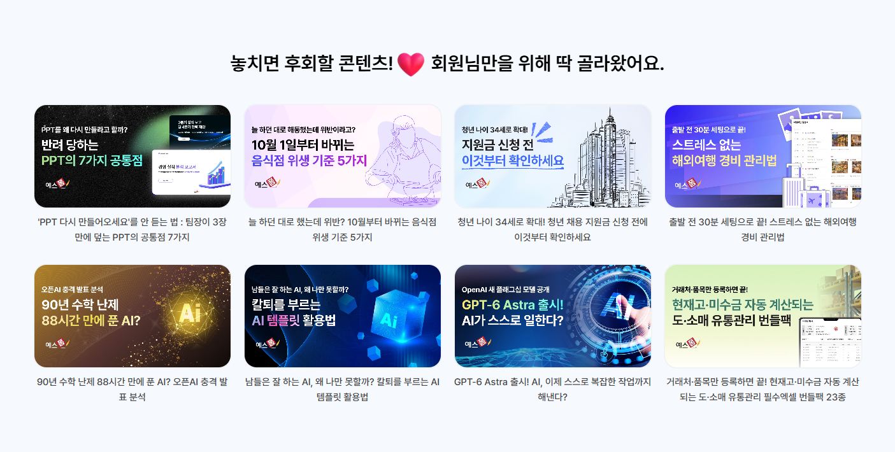

시안01
시안02
등장 다시 보기
카테고리
회원가입
이용요금
고객센터
로그인
오늘 찾고 있는 서식은 무엇인가요?
문서 검색
예스폼 AI
서식 검색어
2026 연차관리 엑셀 프로그램! 연차계산기부터 연차촉진서식 까지
AI로 초안 생성하기
예스폼 추천 콘텐츠
2026년 달력
2026 목표관리
실무활용엑셀
12월 신상 PPT 모음
프롬프트 더보기
콘텐츠 더보기

전자계약 30일 무료